软件测试
1.软件质量保证
1.1 概述
1.1.1 软件特征
1.软件的定义
软件是计算机程序、规程以及可能的相关文档和运行计算机系统需要的数据。
2.软件的特征
- 软件是逻辑产品，而不是物理产品
- 软件维护要比硬件维护复杂得多
- 软件工程 正面临持续的挑战
1.1.2 软件质量
1.什么是软件质量
软件质量是系统、部件或者过程满足规定需求的程度。
系统、部件或者过程满足顾客或者用户需要或期望的程度。
2.软件质量的需求
- 用户的需求：能正常使用全部所需要的功能 功能强大，而且界面美观、易用、好用 内容健康，有益于生活和工作 用户的数据安全、受保护和兼容 及时得到新的产品或得到更完美的软件服务 软件可靠性很高，使用软件服务没有时间障碍
- 软件企业的需求：软件质量是市场竞争的需要； 高质量的软件可以大大降低“质量问题产生的成本”，增加公司 的盈利； 质量是进入国际市场的一个关键门坎； 容易维护、移植和扩充，以扩大市场或适应环境的变化。
3.什么是高质量的软件？
相对的无产品缺陷或只有极少量的缺陷, 它能够准时递交给用户并且所用 的费用都是在预算内的并且满足客户需求 ，是可维护的。
4.软件质量的特征
- 很难制定具体的、数量化的产品质量标准
- 对软件的测试不可能穷尽所有情况，有缺陷的软 件仍然可以使用
- 软件产品之间很难进行横向的质量对比
- 软件的类型不同，软件质量的衡量标准的侧重点也不同
- 软件需求是度量软件质量的基础，满足了用户需 求的软件质量，就是好的软件质量
- 会有一些隐含的需求没有明确地提出来
5.软件质量的6个主要特性⭐
- 功能性：软件实现的功能达到要求的和隐含的用户需求以 及设计规范的程度
- 可靠性：软件在指定条件和特定时间段内维持性能的能力 程度
- 易使用性：用户使用该软件所付出的学习精力
- 效率：在指定条件下，软件功能与所占用资源之间的比值
- 可维护性：当发现错误、运行环境改变或客户需求改变时， 程序能修改的容易程度
- 可移植性：将软件从一种环境移入另一种环境的容易程度
6.质量的不同特性之间可能是矛盾的
如片面强调执行效率，设计出来的软件可能结构复杂、难于理解，难于修改和维护。 如追求可靠性，一般要以一定的时间和空间作为代价。
1.1.3 软件质量保证
1.软件质量保证定义
软件质量保证就是为了保证软件高质量而必需的有计划的，系统化的 行动模式，是一种应用于整个软件过程的保护性活动。
它包括：
- 一种质量管理方法， 有效的软件工程技术（方法和工具）
- 在整个软件过程中采用的正式技术复审
- 一种多层次的测试策略
- 对软件文档及其修改的控制
- 保证软件遵从软件开发标准的规程
- 度量和报告机制
2.IEEE给出软件质量保证的定义
软件质量保证是： 一种有计划的，系统化的行动模式，它是为项目或 者产品符合已有技术需求提供充分信任所必需的。 设计用来评价开发或者制造产品的过程的一组活动， 与质量控制有区别。
3.软件质量保证的人员
软件工程师、项目管理者、客户、销售人员和SQA小组的成员
4.软件质量保证的主要任务
- 参与开发项目的软件过程描述
- 复审各项软件工程活动，对其是否符合定义好的软件过程进行核实
- 审计指定的软件工作产品，对其是否符合定义好的软件过程中的相应部分进行核实
- 确保软件工作及工作产品中的偏差已被记录在案，并根据预定规程进行处理
- 记录所有不符合的部分，并报告给高级管理者
- 协调变化的控制和管理，并帮助收集和分析软件度量信息。
1.1.4 软件测试概述
1.软件测试的意义
- 软件总存在缺陷。只有通过测试，才可以发现软 件缺陷
- 我们需要软件测试，来保障软件质量
- 软件测试是评估软件质量和降低软件运行中出现失效风险的一种方法
2.什么是软件缺陷?
从产品内部看，软件缺陷是软件产品开发或维护过程中所存在的错误、 毛病等各种问题；
从外部看，软件缺陷是系统所需要实现的某种功能的失效或违背。
3.软件缺陷表现形式
- 功能、特性没有实现或部分实现
- 设计不合理，存在缺陷
- 实际结果和预期结果不一致
- 运行出错，包括运行中断、系统崩溃、界面 混乱
- 数据结果不正确、精度不够
- 用户不能接受的其他问题，如存取时间过长 、界面不美观
4.什么是软件错误？
软件错误是一种内部缺陷，是软件本身的问题。
5.为什么会产生软件缺陷？
- 项目期限的压力
- 产品的复杂度
- 沟通不良
- 开发人员的疲劳、压力或受到干扰
- 缺乏足够的知识、技能和经验
- 不了解客户的需求
- 缺乏动力
6.什么是软件测试？
软件测试是使用人工或自动手段来运行或测定某个系统的过程，检验它是否满足规定的需求或者弄清预期结果与实际结果之间的差别。
7.软件测试方法
（1）静态方法和动态方法
（2）黑盒测试、白盒测试和灰盒测试
（3）基于软件开发阶段的测试方法：需求测试 单元测试 集成测试 性能测试 压力测试 容量测试 配置测试 回归测试 安装测试 安全性测试
1.1.5 软件质量保证与软件测试的关系
- 软件质量保证是一种有计划的、系统化的行动模式，设计用来评价开发或者制造产 品的过程的一组活动。SQA的职能是向管理层提供正确的可视化的信息，从而促进与协助流程改进
- SQA充当测试工作的指导者和监督者，帮助测试建立质量标准、测试过程评审方法和测试流程，同时通过跟踪和评审测试，及时发现软件测试过程中的问题
- 有了SQA，测试工作就可以被客观的检查与评价 ，同时也可以协助测试流程的改进
- 测试为SQA提供数据和依据，帮助SQA更好地了解质量计划的执行情况、过程质量、产品质量和过程改进进展
“质量管理”包括“质量保证” 和“质量控制”
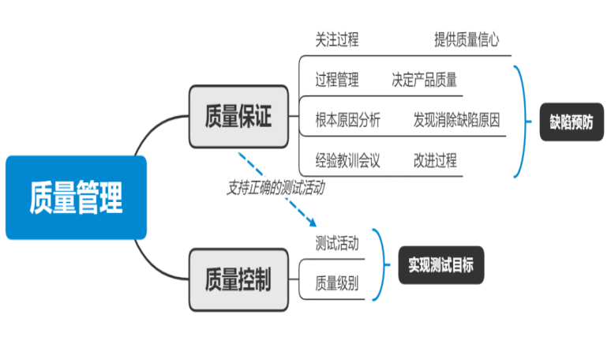
1.1.6 软件质量保证与测试人才的特点
1.2 软件质量工程体系
1.2.1 软件质量控制的基本方法
1.软件质量控制基本概念
（1）软件质量控制的定义
- 从本身的技术意义上说，软件质量控制是一组由开发组织使用的程序和方法，使用它可在规定的资金投入和时间限制的条件下，提供满足客户质量要求的软件产品并持续不断地改善开发过程和开发组织本身，以提高将来生产高质量软件产品的能力。
- 软件质量控制是开发组织执行的一系列过程。
- 软件质量控制的目标是以最低的代价获得客户满意的软件产品。
- 对开发组织本身来说，软件质量控制的另一个目标是从每一次开发过程中学习，使软件质量控制一次比一次更好。
（2）⭐6个软件质量因素
- ① 正确性：实现的功能达到设计规范，并满足用户需求的程度
- ② 可靠性：规定的时间和条件下，仍能维持其性能水准的程度
- ③ 易用性：用户掌握软件操作所要付出的时间及努力程度
- ④ 效率：软件执行某项功能所需电脑资源（含时间）的有效程度
- ⑤ 可维护性：当环境改变或软件发生错误时，执行修改或恢复所做努力的程度
- ⑥ 可移植性：从一个系统/环境移到另一系统/环境的容易程度
2.软件质量控制的基本方法
（1）目标问题度量法GQM
目标问题度量法是通过确认软件质量目标并且持续观察这些目标是否达到软件质量控制的一种方法。
首先确定业务目标， 然后确定与达到目标相关的问题， 再针对每一个问题，确定出一个度量来给出这个问题的客观答案。
- 对一个项目的各个方面（产品、过程和资源）规定具体的目标，这些目标的表达应非常明确。
- 把目标提炼成可以计量的问题：对每一个目标，要引出一系列能反映出这个目标是否达到要求的问题，并要求对这些问题进行回答。
- 根据度量和搜集到的数据推理出问题的答案
（2）风险管理法
软件风险管理法是识别与控制软件开发中对成功达到质量目标危害最大的那些因素的系统性方法。
- 根据经验识别项目要素的有关风险；
- 评估风险发生的概率和发生的代价；
- 按发生概率和代价划分风险等级并排序；
- 在项目限定条件下选择控制风险的技术并制定计划；
- 执行计划并监视进程； 持续评估风险状态并采取正确的措施。
风险识别是试图用系统化的方法来确定威胁项目计划的因素
风险控制方法：风险避免、风险弱化、风险承担、风险转移
1.2.2 软件质量控制模型和技术
1.软件质量控制模型
软件质量控制模型是指对于一个特定的软件开发项目，在如何计划和控制软件质量方面，为一个开发团队提供具体组织和实施指导的框架。
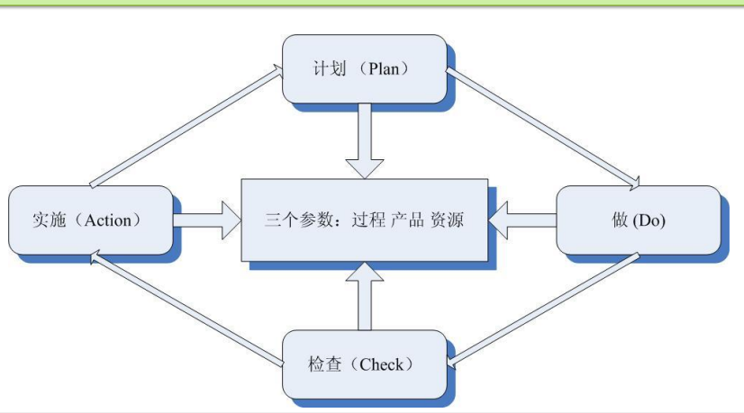
2.软件质量控制模型参数
在质量控制模型中有三类控制参数（过程、产品和资源），在质量控制中，应不断地对这三类参数进行调整与检查。
3.软件质量控制的实施过程
预开发阶段 开发阶段 维护阶段
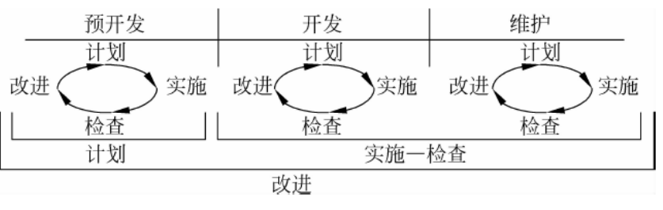
4.软件质量控制技术
（1）定义：软件质量控制是通过调节质量控制参数来得到的，选择合适的质量控制技术至关重要。
（2）软件质量控制技术的特征:
- 一个质量控制技术可以运用于软件不同生命周期阶段；
- “预防性”和“检测性”结合性特征；
- 不同的质量控制技术对不同的质量控制参数有不同的影响。
（3）选择控制技术需考虑的因素：
- 要考虑所选技术的效益并使需求、风险和限制得到平衡。
- 有些技术是冗余的或是矛盾的，只需或只能选择其一。
- 有些技术是互补的，同时使用可能提高效益。
- 控制技术的选用不能与约定相矛盾。
- 有些技术只能用于特定的开发阶段或特定的开发活动中。
- 检测性技术宜尽早使用，以防早期缺陷的产生和传播。
- 对于高风险的设计和程序，质量控制活动和检查点的安排时间上不要隔太久
1.2.3 软件质量保证体系
1.能力成熟度模型（CMM）
能力成熟度模型是对于软件组织在定义、实施、度量、控制和改善其软件过程 的实践中各个发展阶段的描述。
CMM的核心：
是把软件开发视为一个过程，并根据这一原则对软件开发和维 护进行过程监控和研究，以使其更加科学化、标准化、使企业 能够更好地实现商业目标。
实施CMM的必要性：
实施CMM是改进软件质量的有效方法
2.软件质量保证SQA
SQA定义：软件质量保证SQA是建立一套有计划，有系统的方法，来向管理层保证拟定出的标准、步骤、实践和方法能够正确地被所有项目所采用。
SQA目的：使软件过程对于管理人员来说是可见的。
1.3 软件质量度量和配置管理
1.3.1 概述
1.度量
软件质量度量的根本目的是为了管理的需要。
软件工程的目的之一是提供软件过程的可见度。这就需要使用度量。度量是一种可用于决 策的可比较的对象。
2.软件度量
可度量性是学科是否高度成熟的一大标志，度量使软件开发逐渐趋向专业、标准和科学。
3.软件度量的作用
1.3.2 软件质量度量
1.软件质量和软件质量要素
对于软件质量，CMM的定义是： 一个系统、组件或过程符合特定需求的程度； 一个系统、组件或过程符合客户或用户的要求或期望的程度。
2.影响软件质量的因素
软件质量是人、 过程和技术的函数，即Q={M，P，T}。其中，Q 表示软件质量，M表示人，P表示过程，T表示技术。
3.软件质量模型
什么是软件质量模型？
- 描述软件质量指标和软件质量因素之间关系
- 分析软件质量因素究竟如何影响质量指标的
- 寻求最优的质量保证解决方案
- 最终达到软件质量目标
4.缺陷排除效率
缺陷排除效率（DRE）是对质量保证及控制活动的过滤能力 的一个测量，这些活动贯穿于整个过程框架活动。
当把一个项目作为一个整体来考虑时，DRE按如 下方式定义：
DRE=E/（E＋D） 其中E=软件交付给最终用户之前所发现的错误数 D=软件交付之后所发现的缺陷数
1.3.3 软件过程度量
1.软件过程度量概念
- 软件过程度量是对软件过程进行度量的定义、方法、活动和结果的集合。软件过程度量不是单一的活动而是一组活动的集合， 它本身也是一个系统的过程。
- 与任何系统的过程一样，它包括确定需求、制定计划、执行和结果分析等一系列完整的步骤。
- 软件过程度量通常包括如下的活动： 选择和定义度量、制定度量计划、收集数据、执行 度量分析、评估过程性能、根据评估结果采取相应措施等。
2.软件过程度量常见问题
- 度量的太多、太频繁
- 度量的太少、太迟
- 度量了不正确的事物或属性
- 度量的定义不精确
- 收集了数据却没有利用
- 错误的解释度量数据
- 自动化工具欠缺
3.基于目标的软件过程度量方法
GQM模型是一种层次状结构，最上层，是一个目标， 对该目标细化就得到几个问题，构成问题层。 这几个问题，将关注的方面分解为几个部分。
1.3.4 软件配置管理
1.软件配置管理的目标
软件配置管理是在贯穿整个软件生命周期中建立和维护项目产品的完整性。
基本目标包括：
- 软件配置管理的各项工作是有计划进行的。
- 被选择的项目产品得到识别，控制并且可以被相关 人员获取。
- 已识别出的项目产品的更改得到控制。
- 使相关组别和个人及时了解软件基准的状态和内容。
2.软件配置管理角色职责
3.软件配置管理过程描述
4.软件配置管理的关键活动
- 配置项识别
- 工作空间管理
- 版本控制
- 变更控制
- 配置审计
- 状态报告
2.软件测试基础⭐
2.1 为什么需要软件测试？
1.为什么需要软件测试？
软件总存在缺陷。只有通过测试，才可以发现软件缺陷。也只有发现了缺陷，才可以将软件缺陷从软件产品或软件系统中清理出去。
软件失败时，也许仅仅给我们带来了不便，也可能是灾难性的。我们需要软件测试， 来保障软件质量。
2.什么是软件缺陷？
- ① 软件未达到产品说明书中已经标明的功能；
- ② 软件出现了产品说明书中指明不会出现的错误；
- ③ 软件未达到产品说明书中虽未指出但应当达到的目标；
- ④ 软件功能超出了产品说明书中指明的范围；
- ⑤ 软件测试人员认为软件难以理解、不易使用，或者最终用户 认为该软件使用效果不良。
3.为什么会存在缺陷？
人总是容易犯错误的、时间的压力、复杂的代码、复杂的系统架构、技术的革新、系统之间的复杂交互
4.软件缺陷分布
5.软件缺陷修复的费用
随着整个开发过程的时间推移，更正缺陷或修复问题的费用呈几何级数增长
6.缺陷相关术语之间的关系
- 缺陷是由于人为错误或者环境因素导致软件系统中存在的瑕疵；
- 运行存在缺陷的软件系统，并不一定会产生运行错误或对用户产生消极的影响，即失效；
- 假如运行存在缺陷的软件系统，发生了错误或者对用户产生了影响， 这就是失效；
- 一个缺陷的存在不一定会产生失效，但是有的缺陷可以产生非常多的失效；
- 缺陷屏蔽：一个缺陷会被测试对象中的另外缺陷所掩盖；
2.2 软件测试的基本概念
1.软件测试的概念
狭义观点：软件测试就是为了发现错误而执行程序的过程。
标准定义IEEE：使用人工或自动的手段，来运行或测试软件系统的过程，目的是检验软件系统是否满足规定的需求，并找出与预期结 果之间的差异。
辨证观点：软件测试就是为了证明程序有错，而不是证明程序无错误
风险观点：测试被定义为“对软件系统中潜在的各种风险进行评估的 活动”
标准观点：软件测试就是“验证（Verification）”和“有效性确认（ Validation）”活动构成的整体，即软件测试=V&V
验证：是检验软件是否已正确地实现了产品规格书所定义的系统功能和特性
有效性确认：是确认所开发的软件是否满足用户真正需求的活动
2.其它关于软件测试的说法
- 成功的测试时发现了至今为止尚未发现的错误的测试
- 好的测试方案是极可能发现迄今为止尚未发现的错误的测试方案
- 软件测试是一个过程，包含若干活动，运行软件测试进行测试只是
- 活动之一 进行软件测试可以人工方式也可以借助于工具
- 进行软件测试可以运行软件也可以不运行软件
- 软件测试的目的不仅仅是为了发现错误
3.软件测试的目的
- 从用户角度：通过软件测试发现隐藏的错误和缺陷，考虑是否可以接受该产品
- 从开发者角度：表明软件产品不存在错误，验证软件实现 了所有用户的要求
- 从测试人员角度：发现错误，预测错误，提供软件可靠性错误，对软件做出评价
2.3 软件测试的分类⭐
- 按测试的对象或范围分类， 如单元测试、文档测试、系统测试等
- 按测试目的分类， 如功能测试、回归测试、性能测试、可靠性测试、安全性测试和兼容性测试等
- 根据测试过程中被测软件是否被执行， 分为静态测试和动态测试
- 根据是否针对系统的内部结构和具体实现算法来完成测试， 可分为白盒测试和黑盒测试
- 按测试方法分类，数据库测试、压力测试、恢复测试、安全测试、兼容性测试等
2.4 软件测试的原则
1.软件测试的原则
- ① 完全测试是不可能的。
- ② 软件测试是有风险的行为。
- ③ 测试无法显示潜伏的缺陷。即使在测试过程中没有发现缺陷，也不能证明测试对象是完全正确的。
- ④ 软件缺陷的群集现象。找到的软件缺陷越多，说明附近的软件缺陷越多。
- ⑤ 如果想使软件测试有效，就要更加关注那些经常或者可能出现错误的程序段 ，在那里发现软件缺陷的可能性会大的多。
- ⑥ 在系统分析、设计、实现阶段的复审工作中能够发现和避免 80% 的软件缺陷，此后的系统测试能够帮助我们找出剩余缺陷中的 80% ，最后的 5% 的软件缺陷可能只有在系统交付使用后用户经过大范围、长时间使用后才会曝露出来。
- ⑦ 80% 的软件缺陷可以借助人工测试而发现， 20% 的软缺陷可以借助自动化测试能够得以发现。由于这二者间具有交叉的部分，因此尚有 5% 左右的软件缺陷需要通过其它方式进行发现和修正。
- ⑧ 软件测试越多，其免疫力也越强，表现为同样的测试用例被重复使用多次，将不能发现新的缺陷
- ⑨ 并非所有软件缺陷都能修复，其原因在于： 没有足够的时间、不算真正的软件缺陷、修复的风险太大、不值得修复
- ⑩ 应该尽早地和不断地进行软件测试；
- 严格执行测试计划，排除测试的随意性；
- 所有的测试应该追溯到用户需求；
- 测试应该从“小规模”开始，逐步向“大规模”即渐增式build测试；
- 不存在缺陷并不代表是有用的系统
2.软件测试的目标
以最少的时间和人力找出软件中潜在的各种错误和缺陷
3.⭐测试与调试有什么区别？
- 测试的目的是找出存在的错误；而调试的目的是定位错误并修改程序以修正错误；
- 调试是测试之后的活动，测试和调试在目标、方法和思路上都有所不同；
- 测试从一个已知条件开始，使用预先定义的过程，有预知结果；
- 调试从一个未知的条件开始，结束的过程不开预计；
- 测试过程可以实现设计，进度可实现确定；
- 调试不能描述过程或持续时间
2.5 软件测试过程模型
1.测试与软件开发各阶段的关系
软件开发过程是一个自顶向下逐步细化的过程。
测试过程是依相反顺序安排的自底向上逐步集成的过程。
2.软件测试阶段
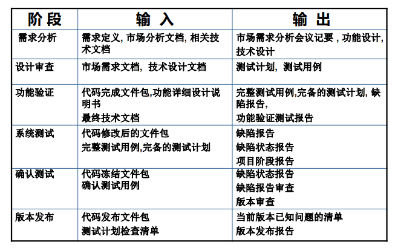
3.软件生命周期中的测试级别
- 单元测试：完成对最小的软件设计单元——模块的验证工作，只有在保证模块作为一个独立运行单元能够正确运行的条件下，后续的 测试才可能进行. 单元测试通常情况下是面向白盒的
- 集成测试：把经过单元测试的模块按软件结构组合在一起作为一个 系统或一个子系统来综合测试
- 系统测试：测试软件系统和其他的系统元素（及硬件、数据库和人 机交互信息）组合构成完整的计算机应用系统中所有的元素配合是否合适以及整个系统的功能、性能、执行强度、安全性等是否达到 规定标准
- 验收测试：根据产品规格说明书严格检查产品，确保开发的软件产 品符合用户的各方面要求
4.软件测试过程模型
软件测试由一系列活动组成，软件测试过程模型用于定义软件测试的流程和方法。
（1）V模型
V模型是软件开发瀑布模型的变体，反映了测试活动与分析和设计的关系。
V模型的特点：
- 展示了动态测试的全过程，并定义了动态测试与开发之间的关系。
- 动态测试的行为与开发过程的行为相对应，测试基础是对应开发阶段的文档。
V模型的缺点：
- 测试与开发文档之间很少有完美的一对一关系。
- 完全没有提及静态测试，忽略了代码审查、需求规格说明审查等重要的测试手段。
- 软件测试时间经常由于前期开发阶段进度的拖延而被挤占，甚至取消 ，从而使得测试质量得不到保证。
① V模型A版本

②V模型B版本

③ V模型C版本
（2）W模型
W模型：是对 V模型的改进，表明测试与开发的并行关系 ，充分体现测试贯穿于整个开发过程
W模型的特点：
- W是V的发展，强调测试应在整个开发周期进行。
- 开发行为与测试行为一一对应，但W并不主张动态测试必须要与开发阶段对应起来，W也不限制动态测试行为必须严格地基于开发行为产生的单一文档
W模型的缺点：
在W模型中，需求、设计、编码等活动是串行的，测试和开发活动也保持一种线性的前后关系。只有上一个阶段完成之后，才能正式开始 下一个阶段工作，从而无法支持迭代的开发模式。
（3）H模型
将测试活动视为一个完全独立的活动，具有独立的包括测 试准备活动和测试执行活动的流程。 只要测试准备就绪，就可以开始测试执行活动。在整个开发周期内 ，存在多个这样独立的测试流程。 体现“尽早准备、尽早执行”的思想，并且不同测试活动可以按照合理的顺序进行。
3.黑盒测试⭐
3.1 黑盒测试的基本概念
1.什么是黑盒测试？
黑盒测试又称功能测试、数据驱动测试或基于规格说明书的测试，是一种从用户观点出发的测试。
在测试时，把被测程序视为一个不能打开的黑盒子，在完全不考虑程序内部结构和内部特性的情况下进行。
2.黑盒测试的目的
采用黑盒测试的目的主要是在已知软件产品所应具有的功能的基础上
- ① 检查程序功能能否按需求规格说明书的 规定正常使用，测试各个功能是否有遗漏，检 测性能等特性要求是否满足。
- ② 检测人机交互是否错误，检测数据结构或外部数据库访问是否错误，程序是否能适当地接收输入数据而产生正确的输出结果，并保持外部信息的完整性。
- ③ 检测程序初始化和终止方面的错误。
3.黑盒测试主要测试的错误类型
- ① 不正确或遗漏的功能；
- ② 接口、界面错误；
- ③ 性能错误；
- ④ 数据结构或外部数据访问错误；
- ⑤ 初始化或终止条件错误等等
4.黑盒测试能取代白盒测试吗？
- 黑盒测试只能观察软件的外部表现，即使软件的输入输出都是正确的，却并不能说明软件就是正确的，只有白盒测试才能发现真正的原因。
- 白盒测试能发现程序里的隐患，像内存泄漏、误差累计问题。在这方面，黑盒测试存在严重的不足。
- 通过了白盒测试只能说明程序符合设计要求，并不能说明最终的软件符合用户需求。
- 白盒测试在测试的早期采用，而黑盒测试 主要用于测试的后期。黑盒测试故意不考 虑控制结构，而是注意信息域。
- 黑盒测试与白盒测试都不能取代对方， 只有两者结合才能弥补对方的不足
3.2 黑盒测试方法⭐
3.2.1 等价类划分法
1.概念
- 等价类划分技术将不能穷举的测试过程进行合理分类 ，从而保证设计出来的测试用例具 有完整性和代表性。
- 等价类划分技术可以应用在所有的测试级别中
- 等价类划分法是将程序输入 定义域中的所有可能的输入数据（含有效 和无效）划分成若干个等价类，每一类的 一个代表性的数据在测试中的作用，就等价于这一类中的所有其它数据。
2.什么等价类？
等价类是指某个输入域的子集合。在该子集合中，各个输入数据对于揭露错误都是等效的，即每一类的代表性数据在测试中的作用都等价于这一类中的其它数据。
测试某等价类的代表值就是等效于对于这一类其它值的测试。
3.等价类的类型
有效等价类：指符合《程序规格说明书》，输入合理的数据集合
无效等价类：指不符合《程序规格说明书》， 输入不合理的数据集合
4.采用等价类划分法设计测试用例步骤
（1）确定等价类，列出等价类表
（2）确定测试用例
例1：计算两个1～100之间整数的和
我们将输入域分成了一个有效等价类(1-100）和两个无效等价类(<1,>100)，并为每一个等价类进行编号，然后从每一个等价类中选取一个代表性的数据来测试

5.⭐确定等价类的原则
- ①在输入条件规定了取值范围或值的个数的情况下,则可以确立一个有效等价类和两个无效等价类

②按照数值集合划分，在输入条件规定了输入值的集合或者规定了“必须如何”的条件的情况下,可确立一个有效等价类和一个无效等价类
③在输入条件是一个布尔量的情况下,可以确定一个有效类和一个无效类。
④在规定了输入数据的一组值（假定n个）,并且程序要对每一个输入值分别处理的情况下,可确立n个有效等价类和一个无效等价类。
例：输入条件说明学历可为:专科、本科、硕士、博士四种之一，等价类： 分别取这四种作为四个有效等价类， 把四种学历之外的学历作为无效等价类
⑤在规定了输入数据必须遵守的规则的情况下, 可确立一个有效等价类（符合规则）和若干个无效等价类（从不同角度违反规则）
例：程序输入条件为以字符 ‘a’开头、长度为8的字符串， 并且字符串不包含‘a’~ ‘z’之 外的其它字符
则有效等价类为满足了上述所有条件的字符串， 无效等价类为不以‘a’开头 的字符串、长度不为8的字符串和包含了‘a’~ ‘z’之外其它字符的字符串
⑥在确知已划分的等价类中各元素在程序处理中的方式不同的情况下,则应再将该等价类进一步的划分为更小的等价类
学生信息管理系统——“登录”模块，在规格说明书中描述这一模块：
要求1：用户名使用学生学号，学号要求有11位数字组成，如：20061344001。
细分等价类：等价类在具体程序处理时发现并不是真正的等价。比如学号： 20061344001 ； 20071344001 ； 20081344001 ；分别为该校2006级学生，2007级学生和 2008级学生，那么在选课，学籍管理等功能模块中并不 等价。如果出现这种情况，可以根据具体情况来细分相应的等价类。
6.设计测试用例
（1）在确立了等价类后,可建立等价类表,列出所有划分出的等价类输入条件
（2） 然后从划分出的等价类中按以下三个原则设计测试用例
- ①为每一个等价类规定一个唯一的编号。
- ②设计一个新的测试用例,使其尽可能多地覆盖尚未被覆盖地有效等价类,重复这一步，直到所有的有效等价类都被覆盖为止。
- ③设计一个新的测试用例,使其仅覆盖一个尚未被 覆盖的无效等价类,重复这一步，直到所有的无效 等价类都被覆盖为止。
例2：设有一个档案管理系统，要求用户 输入以年月表示的日期。假设日期限定 在1990年1月~2049年12月，并规定日期 由6位数字字符组成，前4位表示年，后2 位表示月。现用等价类划分法设计测试 用例，来测试程序的“日期检查功能”
（1）划分等价类并编号
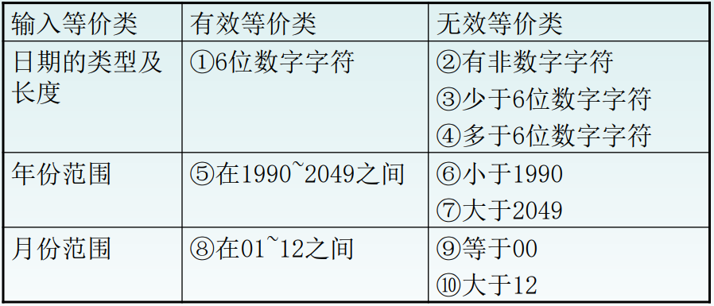
（2）设计测试用例
| 输入 | 期望结果 | 覆盖等价类 |
|---|---|---|
| 201809 | 输入有效 | ①⑤⑧ |
| 95June | 无效输入 | ② |
| 20036 | 无效输入 | ③ |
| 2001006 | 无效输入 | ④ |
| 198912 | 无效输入 | ⑥ |
| 200401 | 无效输入 | ⑦ |
| 200100 | 无效输入 | ⑨ |
| 200113 | 无效输入 | ⑩ |
例3：
某公司公开招聘员工，规定报名者年龄 应在20周岁至45周岁之间（到2020年6月 30日止），即出生年月不早于1975年7月 ，不晚于2000年6月。报名程序具有自动 检验输入数据的功能。如出生年月不在 上述范围内，将拒绝接受，并显示“年 龄不合格”等出错信息。试用等价分类 法设计对这一程序功能的测试用例
3.2.2 边界值分析法
1.什么是边界值分析法？
边界值分析法就是对输入或输出的边界值进行测试的一种黑盒测试方法。通常边界值分析法是作为对等价类划分法的补充，这种情况下， 其测试用例来自等价类的边界。
2.为什么使用边界值分析法？
实践表明，大量的故障往往发生在输入定义域或输出值域的边界上，而不是在其内部。因此，针对各种边界情况设计测试用例 ，通常会取得很好的测试效果。
3.怎样用边界值分析法设计测试用例？
（1）首先确定边界情况。通常输入或输出等价类的边界就是应该着重测试的边界情况。
（2）选取边界值（如：正好等于、刚刚 大于或刚刚小于边界的值）作为测试数据，而不是选取等价类中的典型值或任意值。
通常情况下，软件测试所包含的边界检验有几种类型： ⚫
| 数字 | 最大/最小 |
|---|---|
| 字符 | 首位/末位 |
| 位置 | 上/下 |
| 速度 | 最快/最慢 |
4.确定边界值应遵循的原则
（1）如果输入条件规定了值的范围,则应取刚达到这个范围的边界的值,以及刚刚超越这个范围边界的值作为测试输入数据。
例如，如果程序的规格说明中规定：“重量在10公斤 至50公斤范围内的邮件，其邮费计算公式为……” 。 作为测试用例，我们应取10及50，还应取 10.01,49.99,9.99及50.01等。
（2）如果输入条件规定了值的个数,则用最大个数,最小个数,比最小个数少一,比最大个数多一的数作为测试数据。
比如，一个输入文件应包括1~255个记录，则测试用 例可取1和255，还应取0及256等。
（3）将规则（1）和（2）应用于输出条件，即设计测试用例使输出值达到边界值及其左右的值。
例如，某程序的规格说明要求计算出“每月保 险金扣除额为0至1165.25元”，其测试用例可 取0.00及1165.24、还可取 -0.01 及 1165.26等。
（4）如果程序的规格说明给出的输入域或输出域是有序集合，则应选取集合的第一个元素和最后一个元素作为测试用例。
（5）如果程序中使用了一个内部数据结构, 则应当选择这个内部数据结构的边界上的值作为测试用例。
（6）分析规格说明，找出其它可能的边界条件。
5.内部边界值分析
某些边界值条件是不需要呈现给用户的，或者说用户是很难注意到的，但同时确实属于检验范畴内的边界条件，称为内部边界值条件或子边界值条件。
内部边界值条件主要有下面几种： 数值的边界值；字符的边界值； 其它边界值
（1）数值的边界值

（2）字符的边界值

（3）有一些边界条件容易被人忽略，如在文本框中 不是没有输入正确的信息，而是压根没输入任何内容，就按“确认”按钮。这种情况在实际 使用中经常发生。 ➢ 因此测试时需要考虑程序对下列情况的反应： 默认值 、空白值、空值 、零值、无输入
在实际的测试用例设计中，需要将基本的软件设计要求和程序定义的要求结合起来，即结合基本边界值条件和内部边界值条件来设计有效的测试用例。
6.有多个变量时如何考虑边界？
可靠性理论中的两个假设：
“单缺陷”假设：失效极少是由有两个或两个以上的缺陷同时发生而引起的。
因此，在边界值分析法中获取测试用例的方法是：
① 每次保留程序中一个变量，让其余的变量取正常值 ，被保留的变量依次取min、min+、nom、max-和max。 ②对程序中的每个变量重复①
“多缺陷”假设：失效是由两个或两个以上缺陷同时作用而引起的。
因此，按多缺陷假设来设计测试用例，要求在选取测试用例时同时让多个变量取边界值。
7.⭐边界值分析法测试用例
采用边界值分析测试的基本思想是：故障往往出现在输入变量的边界值附近。
因此，边界值分析法利用输入变量的最小值(min)、略大于最小值(min+) 、输入值域内的任意值(nom)、略小于最大值(max-)和最大值(max)来设计测试用例
例3：有二元函数f(x,y)，其中x∈[1,12]，y∈[1,31]。 采用边界值分析法设计的测试用例是：
{ <1,15>, <2,15>, <11,15>, <12,15>, <6,15>, <6,1>, <6,2>, <6,30>, <6,31> }
⭐推论：对于一个含有n个变量的程序，采用边界值分析法测试程序会产生4n+1个测试用例。
8.健壮性边界测试
健壮性边界测试是作为边界值分析的一个简单的扩充 ，它除了对变量的5个边界值分析取值外，还需要增加一个略大于最大值(max+)以及略小于最小值(min-)的取 值，检查超过极限值时系统的情况。
⭐因此，对于有n个变量的函数采用健壮性测试需要6n+1个测试用例。
例4：有二元函数f(x,y)，其中 x∈[1,12]，y∈[1,31]。 则采用边界值分析法设计的 健壮性测试最有意义的部分不是 健壮性测试用例是：
9.健壮性最坏情况测试
健壮性最坏情况测试是最坏情况测试的扩展，这种测 试使用健壮性测试的七个元素集合的笛卡尔积，以生 成测试用例。
因此，对于有n个变量的函数采用健壮性最坏情况测试 需要7^n个测试用例。
3.2.3 判定表法
1.判定表的概念
判定表是分析和表达多逻辑条件下执行不同操作的工具。
⭐在所有的黑盒测试方法中，基于判定表的测试是最为严格、最具有逻辑性的测试方法。
2.判定表的组成
（1）条件桩： 列出问题的所有条件
（2）动作桩：列出可能采取的操作
（3）条件项：列出条件桩的取值
（4）动作项：列出条件项各种取值下应 该采取的动作
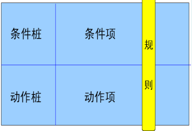
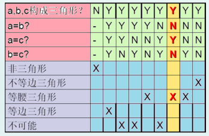
3.规则
（1）什么是规则
- 任何一个条件组合的特定取值及其相应要执行的操作称为规则 ；
- 在判定表中贯穿条件项 和动作项的一列就是一条规则
- 判定表中列出多少组条件取值，也就有多少条规则，即条件项和动作项有多少列
（2）规则合并
规则合并就是判定表的简化。 有两条或多条规则具有相同的动作，并且其条件项之间存在着极为相似的关系，就可以将规则合并。
以上图的三角形问题为例。
① 两条规则合并成一条

② 两条规则的进一步合并

4.判定表建立步骤
根据软件规格说明 ：
①列出所有的条件桩和动作桩；
②确定规则的个数； 假如有n个条件，每个条件有两个取值（0,1 ）,则有2^n 种规则；
③填入条件项；
④填入动作项，得到初始决策表；
⑤简化，合并相似规则（相同动作）
例4：对于功率大于50马力的机器 ，并且维修记录不全或已运行10年以上的机器，应给予优先的维修处理……” 请建立判定表
5.⭐基于判定表的测试
根据输入输出绘制判定表；设计测试用例覆盖判定表中每条规则；
例5：某航空公司的管理软件中某功能规定：去欧美的国际航线所有座位都有食物供应，每个座位都可以播放电影；去非欧美的国际航线都有食物供应，只有商务舱可以播放电影；国内的航班的商务舱都有食物供应，但是不可以播放电影；国内航班经济舱飞行时间大于2小时有食物供应，但不可以播放电影
6.⭐判定表的优点
- 能把复杂的问题按各种可能的情况一一列举 出来
- 简明而易于理解
- 可避免遗漏
7.判定表的缺点及解决方法
判定表的缺点：
- 不能表达重复执行的动作，例如循环结构
- 判定表不能很好地伸缩
- 有n个条件的决策表有2^n 个规则
解决方法：使用扩展条目判定表、代数简化表，将大表 “分解”为小表，查找条件项的判定表式
3.2.4 因果图法
1.因果图法产生的背景
等价类划分法和边界值分析方法都是着重考虑输入条件，但没有考虑输入条件的各种组合、输入条件之间的相互制约关系。这样虽然各种输入条件可能出错的情况已经测试到了，但多个输入条件组合起来可能出错的情况却被忽视了。
2.什么是因果图法？
是一种利用图解法分析输入的各种组合情况，从而设计测试用例的方法。
比较适合输入条件比较多的情况 ，测试所有的输入条件的排列组合。所谓的原因就是输入，所谓的结果就是输出。
3.因果图基本图形符号
节点代表原因或结果的状态，原因用C表示，结果用E表示。状态的取值为0或1。
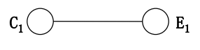
4.⭐因果图中原因和结果之间的关系
- 恒等：若原因出现，则结果出现；若原因不出现，则结果不出现。
- 非（～）：若原因出现，则结果不出现；若原因不出现，则结果出现。
- 或（∨）：若几个原因中有一个出现，则结果出现；若几个原因都不出现，则结果不出现。
- 与（∧）：若几个原因都出现，结果才出现；若其中有一个原因不出现 ，则结果不出现。
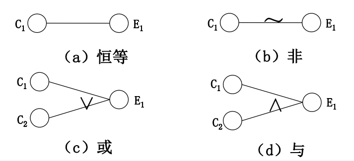
5.⭐因果图的约束符号
- E（互斥:exclusive）：表示两个原因不会同时成立，两个中最多有一个可能成立
- I（包含:inclusive）：表示三个原因中至少有一个必须成立
- O（唯一:only one）：表示两个原因中必须有一个，且仅有一个成立
- R（要求:request）：表示两个原因，a出现时，b也必须出现，a出现 时，b不可能不出现
- M（屏蔽:masking）：两个结果，a为1时，b必须是0，当a为0时，b值 不定

例6：程序的规格说明要求：输入的第一个字符必须是#或* ， 第二个字符必须是一个数字，此情况下进行文件的修改 ；如果第一个字符不是#或*，则给出信息N，如果第二个 字符不是数字，则给出信息M。
解题步骤：
- （1）分析程序的规格说明，列出原因和结果。
- （2）找出原因与结果之间的因果关系、原因与原因之 间的约束关系，画出因果图。
- （3）将因果图转换成决策表。
- （4）根据（3）中的决策表，设计测试用例的输入数据 和预期输出。
（1）分析程序规格说明中的原因和结果：

（2）画出因果图（编号为10的中间结点是导出结果的进一步原因）
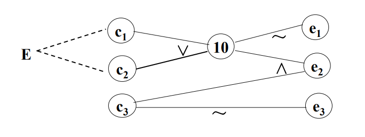
（3）将因果图转换成如下所示的决策表：
（4）根据决策表中的每一列设计测试用例：
例7：某电力公司有A、B、C、D四类收费标准, 并规定： 居民用电 <100度/月 按A类收费 ≥100度/月 按B类收费 动力用电 <10000度/月,非高峰,B类收费 ≥10000度/月,非高峰,C类收费 <10000度/月, 高峰,C类收费 ≥10000度/月, 高峰,D类收费
3.2.5 场景法
1.场景法基本概念
- 场景是从用户的角度来描述系统的运行 行为，是系统期望的运行方式
- 场景是由一系列相关的活动组成，场景 中的活动还可以由一系列的场景构成
- 软件系统中流程的控制都由事件触发的
- 每个事件触发时的情景便形成了场景
- 同一事件不同的触发顺序和处理结果形成事件流
- 通过运用场景来对系统的功能点或业务流程的描述，可以提高测试效果
场景法的概念：场景法就是模拟用户操作软件时的场景， 主要用于测试系统的业务流程
主要用于功能测试
2.基于场景的测试方法的原理
- 在场景法中测试一个软件时， 测试流程是软件功能按照正确 的事件流实现的一条正确流程 ，我们把这个称为该软件的基 本流；
- 出现故障或缺陷的过程(考虑可能失败的地方)，就用备选流加以标注，备选流可以是从基本流来的，或是由备选流中 引出的。
- 每个场景至少对应一组输入和一个预期输出结果，即测试用例。
3.基于场景测试的难点
构建基本流和备选流
图中经过用例的每条路径都用基本流和备选流 来表示，直黑线表示基本流，是经过用例的最简单的路径。
备选流用不同的色彩表示，一个备选流可能从基本流开始，在某个特定条件下执行，然后重新加入基本流中（如备选流1和3）；也可能起源于另一个备选流（如 备选流2），或者终止用例而不再重新加入到某个流（如备选流2和4）。
4.场景法的基本设计步骤
- （1）根据说明，描述程序的基本流及各项备选流
- （2）根据基本流和各项备选流生成不同的场景
- （3）对每一个场景生成相应的测试用例
- （4）对生成的所有测试用例重新复审，去掉多余 的测试用例，测试用例确定后，对每一个测试用例 确定测试数据值
5.场景设计的基本原则
- 最少的场景数等于事件流的总数，即基本流和备选流的总数
- 有且唯一有一个场景仅包含基本流
- 对应于某个备选流，至少应有一个场景覆盖该备选流，且在该场景中应尽量避免覆盖其它的备选流
例8：在网上书店订购书籍时，整个订购过程为：用户登录到网站后，进行书籍的选择， 当选好自己心仪的书籍后进行订购，这 时把所需图书放进购物车，等进行结帐 的时候，用户需要登录自己注册的帐号 ，登录成功后，进行结帐并生成订单， 整个购物过程结束
（1）确定基本流和备选流
（2）确定场景
（3）测试用例
- V（有效）用于表明这个条件必须是 VALID（有效的）才可执行基本流
- I（无效）用于表明这种条件下将激活所需备选流。
- “n/a”（不适用）表明这个条件不适用于测试用例。
（4）测试数据
6.场景法测试注意要点
- 注意测试主题化，从用户角度出发，保证这个场景在用户使用的过程中可以出现到的
- 注意场景中只出现主流程，只测试简单的基本功能
- 例如密码的合法性等测试点，就不需要出现在场景用例中了
- 尽量不要使得不同的场景覆盖同样的测试点
- 设计测试用例时，一个测试用例唯一对应一个场景，但一个场景可能需要设计多个测试用例；
- 基于场景的测试仅需针对输入域展开分析 ，不适于从输出域来展开测试
- 构建场景时可能存在逻辑上可行，而实际 上完全不可能实现的场景。构建场景时尽 量简单，尽量避免同时覆盖多个备选流， 在保证场景可行性的前提下，选择使得场 景尽量简单的事件流的组合
4.白盒测试⭐
4.1 白盒测试的基本概念
1.白盒测试的概念
- 白盒测试主要是测试人员利用程序内部的逻辑结构及有关信息，设计或选择测试用例，对程序所有逻辑路径进行测试，确定实际是否与预期一致。
- 白盒测试又称为结构化测试或逻辑驱动测试。
- 白盒测试只测试软件产品的内部结构和处理过程，而不测试软件产品的功能， 用于纠正软件系统在描述、表示和规格上的错误，是进一步测试的前提。
- 覆盖测试与路径测试是白盒测试两大基本策略。
- 程序的结构形式是白盒测试的主要依据。
- 目的是要在程序中找到隐藏的错误。
2.控制流图
（1）控制流图的定义
程序流程图又称框图。在这种图上的框里面常常标明了处理要求或者条件，但是，这些标注在做路径分析时是不重要的。为了了更加突出控制流的结构，需要对程序 流程图做一些简化。这种简化了的程序流程图称做控制流图。
（a）图是一个含有两个出口判断和循环的 程序流程图，我们把它简化成（b）的形式
在控制流图中只有两种图形符号，它们是：
① 节点：以标有编号的圆圈表示 。它代表了程序流程图中矩形 框表示的处理、菱形表示的两 个到多个出口判断以及两条到 多条流线相交的汇合点。
② 控制流线或弧：以箭头表示。 它与程序流程图中的流线是一致的，表明了控制的顺序。为 了方便讨论，控制流线通常标有名字，如图中所标的a、b、c 等。
（2）控制流图的特点
- ① 唯一入口节点，即源节点，表示程序段的开始语句；
- ② 具有唯一出口节点，即汇节点，表示程序段的结束语句；
- ③ 节点由带有标号的圆圈表示，表示一个或多个无分支的源程序语句；
- ④ 控制边由带箭头的直线或弧表示，代表控制流的方向。
实例：
（3）控制流图中节点合并
有的时候，我们可以把几个节点 合并成一个。
合并的原则：若在一个节点序列中没有分支，则 我们可以把这个序列的节点都合并成一个节点。
4.2白盒测试方法⭐
4.2.1 逻辑覆盖法⭐
1.逻辑覆盖测试的定义：是利用程序的逻辑结构设计相应的测试用例。
2.白盒测试中的逻辑覆盖方法
① 语句覆盖 ② 判定覆盖 ③ 条件覆盖 ④ 判定-条件覆盖 ⑤ 条件组合覆盖 ⑥ 路径覆盖
（1）语句覆盖
概念：语句覆盖是指测试用例能使程序运行时每个可执行语句至少被执行一 次。在保证完成要求的情况下，测试用例的数目越少越好。
在控制流图中，要求所有的语句都被运行的充分必要条件是覆盖图中的所有节点。
例1：实现一个简单的数学运算
只需设计一个测试用例:a=2，b=1 ，c=6；即达到了语句覆盖。
例2：求解一元二次方程程序的测试问题
x
int main(){ float a, b, c, x1, x2, mid; scanf(" %f, %f, %f", &a, &b, &c); if (a != 0) { mid = b * b - 4 * a * c; if (mid > 0) { x1 = (-b + sqrt(mid)) / (2 * a); x2 = (-b + sqrt(mid)) / (2 * a); printf("两不等实根"); } else { if (mid == 0) { x1 = -1 / (2 * a); x2 = x1; printf("两等实根："); } else { x1 = -b / (2 * a); x2 = sqrt(-mid) / (2 * a); printf("两复根："); } } printf("x1 = % f, x2 = % f\n", x1, x2); }}
程序流图：
测试用例：
由控制图可以很容易看到，可以只选3 组（所有的点必须覆盖）：
- 第1组：2，5，3， 执行顺序为： 1，2，3，4，5，10，11，12，13
- 第2组：1，2，1 执行顺序为： 1，2，3，4，5，6，8，9，11，12，13
- 第3组：4，2，1 执行顺序为： 1，2，3，4，5，6，7，9，11，12，13
⭐语句覆盖的缺点：
由于这种测试方法仅针对程序逻辑中显式存在的语句，但对于隐藏的条件是无法测试的。如在多分支的逻辑运算中无法全面的考虑。语句覆盖是最弱的逻辑覆盖
语句覆盖的优点：
可以很直观地从源代码得到测试用例，无须细分每条判定表达式。
（2）判定覆盖
概念：判定覆盖是指设计若干个测试用例能使程序中每个判断条件的真值分支和假值分支至少被执行一遍。在保证完成要求的情况下，测试用例的数目越少越好。
例3：
由控制流图可以很容易看到，可以只选4组（所有的边必须覆盖）：
- 第1组：2，5，3（a！=0,mid>0）， 执行顺序为： 1，2，3，4，5，10，11，12，13
- 第2组：1，2，1 （a！=0,mid=0）， 执行顺序为： 1，2，3，4，5，6，8，9，11，12，13
- 第3组：4，2，1 (a！=0,mid<0）， 执行顺序为： 1，2，3，4，5，6，7，9，11，12，13
- 第4组：0，2，1 (a=0) 执行顺序为： 1，2，3，13
例4：
测试用例: a=2，b=1，c=6； a=-1，b=1，c=-3； 满足判定覆盖的要求。 但如果把a>0错写成a<0,仍然覆盖了所有分支。所以，判定覆盖仍有漏洞。 需要考虑各个条件的取值情况。
判定覆盖的优点：
判定覆盖具有比语句覆盖更强的测试能力。同样判定覆盖也具有和语句覆盖一样的简单性，无须细分每个判定就可以得到测试用例。
判定覆盖的缺点：
大部分的判定语句是由多个逻辑条件组合而成，若仅判断其整个最终结果，而忽略每个条件的取值情况，必然会遗漏部分测试路径。判定覆盖仍是弱的逻辑覆盖。
（3）条件覆盖
概念：条件覆盖是指设计若干个测试用例，执行被测试程序时，程序中每个判断条件中的每个条件的可能取值至少被执行一遍。
例5：
判断M表达式: 设条件 a>0 取真 记为 T1 假 F1；条件 b>0 取真记为 T2 假 F2
判断Q表达式: 设条件 a>1 取真 记为 T3 假 F3；条件 c>1 取真 记为 T4 假 F4
| 测试用例 | 覆盖条件 | 具体取值条件 |
|---|---|---|
| a=2,b=-1,c=-2 | T1, F2, T3, F4 | a>0,b<=0, a>1,c<=1 |
| a=-1,b=2,c=3 | F1, T2, F3, T4 | a<=0,b>0, a<=1,c>1 |
条件覆盖的优点：
增加了对条件判定情况的测试，增加了测试路径
⭐条件覆盖的缺点：
条件覆盖不一定包含判定覆盖。例如，我们刚才设计的用例就没有覆盖判断M的Y分支和判断Q的N分支。 条件覆盖只能保证每个条件至少有一次为真，而不考虑所有的判定结果。
（4）判定-条件覆盖
概念：设计足够的测试用例，使得判断条件中的所有条件可能至少执行一次取值，同时，所有判断的可能结果至少执行一次。
例6：
我们设计的测试用例要满足如下条件： ① 所有条件可能至少执行一次取值；② 所有判断的可能结果至少执行一次。
| 测试用例 | 覆盖条件 | 覆盖判断 |
|---|---|---|
| a=2,b=1,c=6 | T1, T2, T3, T4 | M的Y分支和Q的Y分支 |
| a=-1,b=-2,c=-3 | F1, F2, F3, F4 | M的N分支和Q的N分支 |
判定条件覆盖从表面来看，它测试了所有条件的取值，但是实际上某些条件掩盖了另一些条件。
例如对于条件表达式(a>0)&&(b>0) 来说，必须两个条件都满足才能确定表达式为真。如果（a>0）为假则一般的编译器不在判断是否b>0了。
对于第二个表达式（a>1) || (c>1)来说，若a>1测试结果为真，就认为表达式的结果为真， 这时不再检查（c>1）条件了。
因此，采用判定条件覆盖，不一定能够查出逻辑表达式中的错误
判定－条件覆盖的优点：
能同时满足判定、条件两种覆盖标准。
判定－条件覆盖的缺点：
未考虑条件的组合情况
（5）条件组合覆盖
概念：指设计若干个测试用例 ，执行被测试程序时，程序中每个判断条件的内部判断式的各种真假组合可能都至少被执行一遍。
例7：
我们把每个判断中的所有条件进行组合，设计组合条件如表所示，而我们设计的测试用例就要包括所有的组合条件。
| 编号 | 覆盖条件取值 | 判定条件取值 | 具体条件取值 |
|---|---|---|---|
| 1 | T1,T2 | M取Y | a>0,b>0 |
| 2 | T1,F2 | M取N | a>0,b<=0 |
| 3 | F1,T2 | M取N | a<=0,b>0 |
| 4 | F1,F2 | M取N | a<= 0,b<=0 |
| 5 | T3,T4 | Q取Y | a>1,c>1 |
| 6 | T3,F4 | Q取Y | a>1,c<=1 |
| 7 | F3,T4 | Q取Y | a<=1,c>1 |
| 8 | F3,F4 | Q取N | a<=1,c<=1 |
测试用例：
| 测试用例 | 覆盖条件 | 覆盖判断 | 覆盖组合 |
|---|---|---|---|
| a=2,b=1,c=6 | T1, T2, T3, T4 | M取Y分支，Q 取Y分支 | 1, 5 |
| a=2,b= -1,c= -2 | T1, F2, T3, F4 | M取N分支，Q 取Y分支 | 2, 6 |
| a=-1,b=2,c=3 | F1, T2, F3, T4 | M取N分支，Q 取Y分支 | 3, 7 |
| a= -1,b= -2,c= -3 | F1, F2, F3, F4 | M取N分支，Q 取N分支 | 4, 8 |
条件组合覆盖的优点
条件组合覆盖准则满足判定覆盖、条件覆盖和判定/条件覆盖准则。
条件组合覆盖的缺点
线性地增加了测试用例的数量
（6）路径覆盖
概念：设计所有的测试用例，来覆盖程序中的所有可能的执行路径
- 路径覆盖包含了分支覆盖。
- 对一般的程序来说，要达到100%的路径覆盖率几乎是不可能的。
- 判断不可行路径也是非常困难。程序中往往存在着大量不可行路径。因此，路径覆盖测试不太实用。
例8：
| 测试用例 | 覆盖组合 | 覆盖路径 |
|---|---|---|
| a=2,b=1,c=6 | 1，5 | 1-2-4 |
| a=1,b=1,c=-3 | 1，8 | 1-2-5 |
| a=-1,b=2,c=3 | 4，7 | 1-3-4 |
| a=-1,b=-2,c=-3 | 4，8 | 1-3-5 |
3.路径覆盖的优点：
这种测试方法可以对程序进行彻底的测试，比前面五种的覆盖面都广。
路径覆盖的缺点：
需要设计大量、复杂的测试用例，使得工作量呈指数级增长，不见得把所有的条件组合都覆盖。
⭐部分覆盖准则间的关系

4.条件组合覆盖结合路径覆盖
4.2.2 基本路径测试法⭐
1.为什么要引入基本路径测试法？
逻辑覆盖测试主要关注的是程序内部的逻辑结构 ，最彻底的测试就是覆盖程序中的每一条路径， 对于一个较为复杂的程序要做到完全的路径覆盖测试是不可能实现的。
因此我们希望将要覆盖的路径数压缩到一个有限的范围内，通过合理地选择一组穿过程序的测试路径，以实现达到某种测试度量 ，而确保程序中每一个语句都执行一次。
2.什么是基本路径测试法？
基本路径测试方法使测试用例设计者产生一种过程设计的逻辑复杂性测度，这种测度为执行路径的基本集的定义提供指导。
执行该基本集所生成的测试用例保证程序中的每一条语句至少执行一次。
3.什么是独立程序路径？
独立路径是任何贯穿程序的、至少引入 一组新的处理语句或一个新的条件的路径。
从控制流图来看，一条独立路径是至少包含有一条在其它独立路径中从未有过的边的路径。路径可以用控制流图中的节点序列来表示。
3.⭐关于控制流图的说明
（1）流程图中的 一组顺序处理框， 在控制流图中可 以被映射成为一 个单一节点

（2）若判断中的条件表达式是复合条件时，需要改复合条件为一系列只有单个条件的判断

4.⭐程序圈（环形）复杂度
（1）作用：找出有多少条路径
（2）概念：程序的圈（环形）复杂度是一种描述程序逻辑复杂度的标准，给出了程序基本路径集中的独立路径条数，这是确保程序中每个可执行语句至少执行一次所必需的测试用例数目的上界。
（3）⭐计算方法
给定一个控制流图G，设其圈（环形）复杂度为V(G)，有三种常见 的计算方法来求解V(G)。
- ① V(G)=E-N+2，其中：E是控制流图G中边的数量，N是控制流图中节点的数目
- ② V(G)=P+1，其中P是控制流图G中判断节点的数目
- ③ V(G)=A(+1)， 其中A是控制流图G中区域的数目。由边和结点围成的区域叫做区域。在控制流图中，控制流图外的区域也应记为一个区域
例9：给出该图的独立路径
上图中，一组独立的路径是：
- path1：1 - 11
- path2：1 - 2 - 3 - 4 - 5 - 10 - 1 - 11
- path3：1 - 2 - 3 - 6 - 8 - 9 - 10 - 1 - 11
- path4：1 - 2 - 3 - 6 - 7 - 9 - 10 - 1 – 11
路径 path1，path2，path3，path4组成了控制流图的一个基本路径集。
5.独立路径获取
（1）确定主路径
在所有路径中找到一条最复杂的路径作为基础路径（简称为主路径）
复杂性体现在：
- 应包含尽可能多的判定节点（包括条件判定和循环判定节点）
- 判定意味着程序执行路径分支。因此 ，包含越多的判定则表明该路径越复杂
- 该路径应包含尽可能复杂的判定表达式（ 当判定节点数量相同时）
- 该路径应对应尽可能高的执行概率
- 该路径应包含尽可能多的语句
（2）具体做法
采用深度优先搜索策略
若遇到判定节点，可遵循“先遍历false分支，再遍历true分支”的原则
需根据“基本路径”的定义对每一条路径进行检查， 看其中是否包含了之前其它路径中不曾出现过的边。 若否，则将其去除
若程序需要输出多条基本路径，按照路径长度由小到大排序输出；若两个路径的长度相等，则按相对应位置的数字大小由低到高排列：
1,3,6,5和1,3,4,5两条路径，后者应该先输出；
1,10,8,3,4和1,9,10,3,4两条路径，后者应该先输出。
（3）不可行路径
在设计程序时若存在缺陷，将导致得到的路径是在事实上完全不可能执行到的路径。
比如，构成判定表达式的多个简单判定条件之间存在一定关联，即在多个简单判定条件的取值相互约束时，可能导致路径不可行。
6.⭐独立路径测试的步骤
- ① 导出程序控制流图
- ② 求出程序圈复杂度
- ③ 设计测试用例
例10：为如下程序设计独立路径测试用例
xxxxxxxxxx1 int main()2 {3 int num1 = 0, num2 = 0, score = 100;4 int i;5 char str;6 scanf("%d, %c\n", &i, &str);7 while (i < 5)8 {9 if (str == "T")10 num1++;11 else if (str == "F")12 {13 score = score - 10;14 num2++;15 }16 i++;17 }18 printf("num1 = %d, num2 = %d, score = %d\n", num1, num2, score);19 }
（1）导出程序控制流图
（2）求出程序环形复杂度
根据程序环形复杂度的计算公式，求出程序路径集 合中的独立路径数目。
公式1：V(G)=10-8+2，其中10是控制流图G中边的数量，8是控制流图中节点的数目。
公式2：V(G)=3+1，其中3是控制流图G中判断节点的数目。
公式3：V(G)=4，其中4是控制流图G中区域的数目。 因此，控制流图G的环形复杂度是4，需要4条独立路 径组成基本路径集合，并由此得到能够覆盖所有程序语 句的测试用例。
（3）设计测试用例
根据上面环形复杂度的计算结果，源程序的基本路径集合中有4条独立路径：
路径1：7->18
路径2：7->9->10->16->7->18
路径3：7->9->11->15->16->7->18
路径4：7->9->11->13->14->15->16->7->18
根据上述4条独立路径，设计测试用例组。测试用例组中的4个测试 用例作为程序输入数据，能够遍历这4条独立路径。对于源程序中的 循环体，测试用例组中的输入数据使其执行零次或一次。
测试用例如下：
例11：用基本路径法测试以下程序片段
xxxxxxxxxxvoid DoWork(int x, int y, int z) {1 int k = 0, j = 0;2 if ((x > 3) && (z < 10)) {3 k = x * y - 1;4 j = sqrt(k);5 }6 if ((x == 4) || (y > 5)) {7 j = x * y + 10;8 }9 j = j % 3;10 }
(1)程序流图如下：
（2）圈复杂度：程序流图共有4个判定节点，故圈复杂度V(G)=4+1= 5
（3）设计测试用例
根据圈复杂度，基本路径集合中有4条独立路径：
①1-2A-2B-5-6A-7-8-9
②1-2A-2B-3-4-5-6A-7-8-9
③1-2A-2B-5-6A-6B-8-9
④1-2A-2B-5-6A-6B-7-8-9
⑤1-2A-5-6A-6B-8-9
测试用例如下：
| 测试用例 | 输入：x,y,z | 预期结果：j,k | 执行路径 |
|---|---|---|---|
| 1 | 4, 4, 11 | j=26, k=0 | ① |
| 2 | 4, 5, 9 | j=30, k=19 | ② |
| 3 | 5, 4, 11 | j=0, k=0 | ③ |
| 4 | 5, 6, 11 | j=40, k=0 | ④ |
| 5 | 2, 4, 9 | j=0, k=0 | ⑤ |
7.路径选取的一般原则
- （1）必须满足逻辑覆盖的最低标准。语句覆盖加判定覆盖作为路径选取的最低标准
- （2）对单循环、嵌套循环、串接循环和不规则循环，给出相应的路径选取规则。
- （3）选取最简单的、具有一定功能含义的路径。
- （4）由简到繁，若有可能，先考虑不含循环的测试路径，然后补充对循环的测试；
- （5）尽可能选取短路径；
- （6）选取没有明显功能含义的路径，此时要研究这样的路径为什么存在，为什么没有通过功能上合理的路径得到覆盖。
4.3 小结
- 白盒测试是软件测试技术中最基本的方法之一，白盒测试的核心是针对被测单元内部是如何进行工作的测试，是以覆盖测试与路径测试为基本策略。
- 白盒测试是一种被广泛使用的逻辑测试方法，是由程序内部逻辑驱动的一种单元测试方法。只有对程序内部十分了解才能进行适度有效的白盒测试。但是贯穿在程序内部的逻辑存在着不确定性和无穷性，尤其对于大规模复杂软件。因此我们不能穷举所有的逻辑路径，即使穷举也未必会带来好运
- 那么正确使用白盒测试，就要先从代码分析入手，根据不同的代码逻辑规则、语句执行情况，选用适合的覆盖方法。任何一个高效的测试用例，都是针对具体测试场景的。逻辑测试不是片面的测试正确的结果或是测试错误的结果，而是尽可能全面地覆盖每一个逻辑路径。
- 语句覆盖：语句覆盖就是设计若干个测试用例，运行被测试程序，使得每一 条可执行语句至少执行一次；
- 判定覆盖（也称为分支覆盖）：设计若干个测试用例，运行所测程序，使程 序中每个判断的取真分支和取假分支至少执行一次； 条件覆盖：设计足够多的测试用例，运行所测程序，使程序中每个判断的每 个条件的每个可能取值至少执行一次；
- 判定-条件覆盖：设计足够多的测试用例，运行所测程序，使程序中每个判断 的每个条件的所有可能取值至少执行一次，并且每个可能的判断结果也至少 执行一次，换句话说，即是要求各个判断的所有可能的条件取值组合至少执行一次；
- 条件组合测试：设计足够多的测试用例，运行所测程序，使程序中每个判断 的所有可能的条件取值组合至少执行一次；
- 路径测试：设计足够多的测试用例，运行所测程序，要覆盖程序中所有可能的路径。
5.单元测试
5.1 单元测试的基本概念
1.单元是什么？
IEEE：指软件设计说明中一个可独立测试的元素，是程序中一个逻辑上独立的部分，它不能再分解为其它软件成分。
实践中：指软件源代码中单个的函数，源文件或类。
2.单元测试是什么？
单元测试又称模块测试，是针对软件设计的最小单元，进行功能、性能、接口 和设计等正确性检验的测试工作。
单元测试的内容包括：单元的内部结构、 单元的功能和可观测的行为
把测试比作是清洗一台机器： 系统测试就是清除机器外面的尘土。 集成测试就是保证机器各个部件的接头处干净。 单元测试就是清洗各个零件的内部。
3.单元测试的对象
- 结构化编程语言：单元测试对象是函数或者子过程。
- 面向对象语言：单元测试对象是类或者类的方法。 如一个菜单、屏幕显示界面或对话框等
4.单元测试的目的
- ① 单元测试能更准更全面地找到错误，显著提 高软件质量；
- ② 单元测试能够大量削减开发时间和成本； 单元测试能尽早发现错误
5.单元测试原则
- 应该尽早地进行软件单元测试
- 应该保证单元测试的可重复性
- 尽可能地采用测试自动化的手段来支持单元测试活动
6.单元测试的意义
（1）对软件的设计实现：保障软件质量； 降低成本； 更清晰的认识设计流程； 架构反思； 代码易于维护； 改善团队沟通；
（2）对软件开发者：更清晰地认识设计规格说明书； 提高代码静态分析技 能； 编码规范； 学习机会；
5.2 单元测试内容
1.在单元测试时，测试者需要依据详细设计说明书和源程序清单，了解该模块的I/O条件和模块的逻辑结构，主要采用白盒测试的测试用例，辅之以黑盒测试的测试用例，使之对任何合理的输入和不合理的输入，都能鉴别和响应。
2.单元测试的内容

3.单元测试执行人员
单元测试可以是开发者本人执行，也可以是独立的专业测试人员执行。
两者各有优势：
建议开发人员必须完整地做单元测试，同时测试人员针对重点模块实施独立的单元测试
5.3 单元测试方法及环境
1.静态测试技术
不运行被测试程序， 对代码通过检查、阅读进行分析。
代码走查-代码审查-代码评审
2.动态测试技术
动态测试需要真正将程序运行起来，需要设计系 列的测试用例保证测试的完整性和有效性。
方法：白盒测试、黑盒（灰盒）测试
3.单元结构测试
单元结构测试关注的是代码内部的执行情况，关 注代码执行的覆盖率。 单元结构测试方法主要采用白盒测试。
4.单元功能测试
单元功能测试主要采用黑盒测试方法。
5.单元测试环境
基本单元本身不是一个独立的程序，自己不能运行，要靠其它部分来调用和驱动
驱动模块 (Driver)：被测基本单元的主程序。即对底层或子层模块进行测试所编写的调用这些模块的程序。
桩模块 (Stub)：用来代替被测基本单元调用的其它基本单元。即对顶层或上层模块进行测试时所编写的替代下层 模块的程序。
5.4 单元测试策略
5.4.1 自顶向下的单元测试（不推荐）
1.方法：先对最顶层的基本单元进行测试，把所有调用的单元做成桩模块。然后再对第二层的基本单元进行测试，使用上面已测试的单元做驱动模块。依此类推直到测试完所有基本单元。
2.优点：在集成测试前提供早期的集成途径。在执行上和详细设计的顺序一致。不需要开发驱动模块。
3.缺点：随着测试的进行，测试过程越来越复杂， 开发和维护成本增加。
4.总结：比孤立单元测试的成本高很多，不是单元测试的一个好的选择。
5.4.2 自底向上的单元测试（较好）
1.方法：先对最底层的基本单元进行测试，模拟调用该单元的单元做驱动模块。然后再对上面一层进行测试，用下面已被测试过的单元做桩模块。 依此类推，直到测试完所有单元。
2.优点：在集成测试前提供系统早期的集成途径。 不需要开发桩模块。
3.缺点：随着测试的进行，测试过程越来越复杂
4.总结：比较合理的单元测试策略，但测试周期较长。
5.4.3 孤立单元测试（最佳）
1.方法：不考虑每个单元与其它单元之间的关系，为每个单元设计桩模块或驱动模块。每个模块进行独立的单元测试。
2.优点：简单、容易操作，可达到高的结构覆盖率。
3.缺点：不提供一种系统早期的集成途径
4.总结：最好的单元测试策略。
6.集成测试
6.1 集成测试的基本概念
1.集成测试的引入
软件在系统集成时会经常有这样的情况发生： 每个模块都能单独工作 ，但这些模块集成在一起 之后却不能正常工作； 或是系统集成后虽可以正常运行，但系统的容错 性、安全性以及整体性却得不到保障，系统不能 长时间运行等等。
这就需要进行集成测试和系统测试 ，以找出其中的软件缺陷，来提高整个软件的质量和可靠性。
2.什么是集成测试？
- 也叫做组装测试、联合测试、子系统测试和部件测试。
- 集成测试是在单元测试的基础上，将所有模块按照概要设计要求组装成为子系统或系统，进行集成测试。
- 最简单的形式是：两个已经测试过的单元组合成 一个组件，并测试它们之间的接口。
- 实际操作中，通常集成测试的对象为模块级的集 成和子系统间的集成，其中子系统集成测试称为 组件测试。
3.灰盒测试
- 灰盒测试，是介于白盒测试与黑盒测试之间的一种测试。
- 灰盒测试多用于集成测试阶段，不仅关注输出、输入的正确性，同时也关注程序内部的情况。
- 灰盒测试不像白盒那样详细、完整，但又比黑盒测试更关注程序的内部逻辑，常常是通过一些表征性的现象、事件、标志来判断内部的运行状态。
4.为什么要进行集成测试？
- 集成测试在单元测试和系统测试间起到承上启下 的作用，既能发现大量单元测试阶段不易发现的接口类错误，又可以保证在进入系统测试前及早发现错误，减少损失。
- 单元测试通常是单人执行，而集成测试通常是多人执行或第三方执行。集成测试通过模块间的交互作用和不同人的理解和交流，更容易发现实现上、理解上的不一致和差错。
5.⭐什么时候开始集成测试？
- 在开始体系结构设计的时候开始制定测试方案；
- 在进入详细设计之前完成集成测试方案；
- 在进入系统测试之前结束集成测试
6.由谁来执行集成测试？
集成测试可以在开发部进行，也可以由独立的测试部执行。
开发部尽量进行集成测试，测试部有选择地进行集成测试。
7.集成测试原则
- 集成测试是产品研发中的重要工作，需要为其分配足够的资源和时间。
- 集成测试需要经过严密的计划，并严格按计划执行。
- 应采取增量式的分步集成方式，逐步进行软件部件的集成和测试。
- 应重视测试自动化技术的引入与应用，不断提高集成测试效率。
- 应该注意测试用例的积累和管理，方便进行回归并进行测试用例补充。
8.集成测试关注的重点
- 在把各个模块连接起来时，穿越模块接口的数据是否会丢失。
- 各个子功能组合起来，能否达到预期要求的父功能。
- 一个模块的功能是否会对另一个模块的功能产生不利的影响。
- 全局数据结构是否有问题，会不会被异常修改。
- 单个模块的误差积累起来，是否会放大，从而达到不可以接受的程度。
9.集成测试的层次
一般可以根据不同的集成力度把集成测试划分为 三个级别：
- 模块内集成测试。
- 子系统内集成测试：先测试子系统内的功能模块， 然后将各个功能模块组合起来确认子系统的功能是 否达到预期要求。
- 子系统间集成测试：测试的单元是子系统之间的接 口。子系统是可单独运行的程序或进程。
对面向对象的应用系统来说，可分为2个层次： 类内集成测试类间集成测试
6.2 集成测试策略
1.非增量式方式
概念：先测试好每一个软件单元，然后一次组装在一起 再测试整个程序。
方法：大爆炸/大棒

优点： 方法简单。 允许多测试人员同时并行工作，人力物力资源利用率较高。
缺点：
- 必须为每个模块准备相应的驱动模块和桩模块，测试成本较高
- 难以保证对各个模块之间的接口进行充分测试；
- 对全局数据结构的测试不够彻底；
- 难以进行错误定位和修改；
- 修改错误之后，需要集成回归测试；
2.增量式方式
概念：逐步把下一个要被组装的软件单元或部件，同已测好的软件部件结合起来测试。
方法：增量方式主要包括自顶向下、自底向上、自顶向下与自底向上相结合等方法
（1）自顶向下
模块集成的顺序是首先集成主控模块（主程序）， 然后依照控制层次结构向下进行集成
从属于主控模块的按深度优先方式（纵向）或者广 度优先方式（横向）集成到结构中去
深度优先组装方式：
广度优先组装方式：
自顶向下方法优点：
- 较早地验证了主要控制和判断点；
- 按深度优先可以首先实现和验证一个完整的软件功能；
- 功能较早证实，带来信心；
- 只需一个驱动，减少驱动器开发的费用
- 支持故障隔离
自顶向下方法缺点：
- 桩的开发和维护费用大
- 底层验证被推迟
- 底层模块的需求变更可能会影响到全局组件，需要修改整个系统的多个上层模块
- 可能会导致底层模块，特别是被重用的模块测试不够充分
- 要求控制模块具有比较高的可测试性
自顶向下方法适用范围：
- 产品控制结构比较清晰和稳定的应用程序
- 高层接口变化较小
- 底层接口未定义或经常可能被修改
- 产品控制组件具有较大的技术风险
- 需要尽早被验证
- 希望尽早能看到产品的系统功能行为
（2）自底向上
从具有最小依赖性的底层组件开始，按照依赖关系树的结构，逐层向上集成，以检验系统的稳定性。
最常用的集成策略，其它方法都或多或少应用此种方法。
自底向上方法优点：
- 对底层组件行为较早验证；
- 工作最初可以并行集成，比自顶向下效率高；
- 减少了桩的工作量；
- 能较好锁定软件故障所在位置
自底向上方法优点缺点：
- 驱动的开发工作量大；
- 对高层的验证被推迟，设计上的错误不能被及时发现。
自底向上方法适用范围：
- 适应于底层接口比较稳定；
- 高层接口变化比较频繁；
- 底层组件较早被完成
（3）三明治集成方法
三明治集成方法是一种混合测试策略，综合了自顶向下和自底向上两种集成方法的优点
举例：用三明治集成方式如何测试？
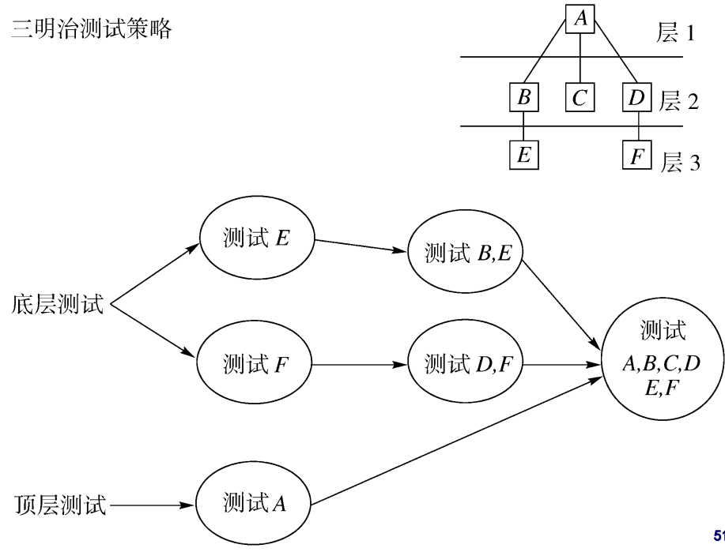
- 确定以哪一层为界来决定使用三明治集成策略。我们确定以B模块为界；
- 对模块B及其所在层下面的各层使用自底向上的集成策略；
- 对模块B所在层上面的层次使用自顶向下的集成策略；
- 把模块B所在层各模块同相应的下层集成；
- 对系统进行整体测试
三明治集成方法优点：
它将自顶向下和自底向上的集成方法有机地结合起来，一般对软件结构的上层使用自顶向下结合的方法；对下层使用自底向上结合的方法；运用一定的技巧，能够减少了桩模块和驱动模块的开发。
三明治集成方法缺点：
在被集成之前，中间层不能尽早得到充分的测试。
三明治集成方法适用范围：适应于大部分软件开发项目
6.3 小结
7.系统测试 功能测试 回归测试 性能测试
7.1 系统测试
1.概念：系统测试指软件投产以前， 接近于日常测试的综合性检验测试，往往是很复 杂的过程。
2.目的：通过与系统的需求定义作比较，发现软件与系统定义不符合或与之矛盾的地方
3.目标：
- 检验组成整个系统的代码、以及系统的软硬件配合有无错误；
- 代码实现的系统与用户需求是否吻合；
- 检验系统的文档等各种是否完整、有效；
- 模拟验收测试的要求，检查系统是否符合用户的验收标准；
4.时机：多数集成测试完成后
5.方法：黑盒测试
6.责任人： 测试工程师
7.系统测试的环境：是软件真实运行环境的最逼真模拟。系统测试中，各部分研制完成的真实设备逐渐替代了模拟器，是软件从未有过的运行环境。
8.系统测试的主要内容：功能测试、性能测试、负载测试、强度测试、容量测试、安全性测试、配置测试、故障恢复测试 、安装测试、文档测试、用户界面测试等
功能测试、性能测试、配置测试、安装测试等在一般情况下是必需的，而其它的测试类型 则需要根据软件项目的具体要求进行裁剪。
7.2 功能测试
1.概念：又称正确性测试，是指在规定的一段时间内运行软件系统的所有功能，以验证这个软件系统有无严重错误，即测试软件系统的功能是否正确，由于正确性是软件最重要的质量因素， 故功能测试是软件测试中不可或缺的重要测试内容之一。
2.功能测试的意义
功能测试在单元测试和集成测试阶段都有。
- 单元测试说明了代码执行是否正确；
- 功能测试说明了完成的功能是否做正确的事情
- 单元测试中的功能测试是从代码开发人员的角度来 编写的，系统测试中的功能测试是从最终用户和业务流程的角度来编写的
3.功能测试的内容
针对不同的应用系统，功能测试的测试内容的差异很大，但一般可归为界面、数据、操作、逻辑、接口等几个方面
4.功能测试需要的参考文档
- ① 产品功能说明书
- ② 产品需求说明书
- ③ 产品概要说明书
- ④ 产品测试大纲
- ⑤ 功能测试所需的测试用例
5.什么是测试需求？
测试需求是用来识别什么内容是需要进行测试的
测试需求通常需要覆盖一些业务规则，功能以及非功能的内容，不需要有实际的测试数据出现
6.为什么要识别测试需求
- 确定测试完整性的一个基础
- 确定测试的范围
- 识别可做自动化测试的策略
- 测试的方向标
7.业务需求与测试需求的关系
- 业务需求通常是指系统需要做什么。
- 测试需求除了需要覆盖系统应该做什么外 ，还要覆盖系统不应该做什么。
- 测试需求是用来发现需求中存在的问题。
7.3 回归测试
一旦程序某些区域被修改了，就可能影响其它区域，导致受影响的区域出现新的缺陷（回归缺陷）。如果这时没有回归测试，产品就带着这样的回归缺陷被发布出去了，造成严重后果。回归测试就是为了发现回归缺陷而进行的测试。
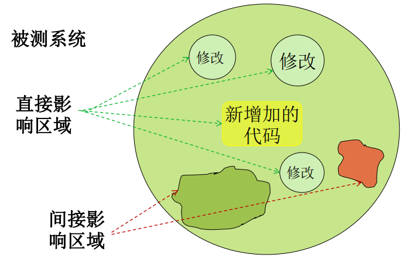
⭐单元测试、集成测试与系统测试的差别
7.4 性能测试
1.什么是性能？
首先，软件的性能和功能的源头都是来自于用户的需求。
功能指的是在一般条件下软件系统能够为用户做什么，能够满足用户什么样的需求。
性能则是衡量软件系统“好快”的一个重要考虑因素。
简单地说，性能就是在空间和时间资源有限的条件下，软件系统还能不能工作。
2.功能与性能的关系
性能和功能区别的实质是：软件功能焦点在于软件“做什么”，关注软件物质“主体”发生的“事件”；软件性能则关注于软件物质“做得如何”，这是综合“空间”和“时间”考虑的方案（资源和速度），表现为软件对“空间”和“时间”的敏感度
3.用户对软件的性能需求
计算性能；资源的利用和回收；启动时间；伸缩性； 稳定性
4.性能指标
- 响应时间：就是用户感受软件系统为其服务所耗费的时间
- 吞吐量：是指软件系统在每单位时间内能处理多少个事务/请求/单位数据等
- 资源使用率
- 点击数
- 并发用户数
凡是用户有关资源和时间的要求都可以被视作性能指标，都可以作为软件系统的度量，而性能测试就是为了验证这些性能指标是否被满足
5.⭐什么是性能测试？
性能测试就是为了发现系统性能问题或获取系统性能相关指标而进行的测试。一般在真实环境、特定负载条件下，通过工具模拟实际软件系统的运行及其操作，同时监控性能各项指标，最后对测试结果进行分析来确定系统的性能状况。
狭义的性能测试：主要用于描述常规的性能测试，是指通过模拟真实的业务压力或用户使用场景来测试系统的性能是否满足用户的性能要求。
广义的性能测试：是压力测试、负载测试、强度测试、并发用户测试、大数据量测试、配置测试、可靠性测试等和性能相关的测试统称。
6.性能测试自身的一些特点
- 性能测试不是功能测试。性能测试不要求也无法做到覆盖软件所有的功能，通常我们只是对系统中某些功能或模块做性能测试。
- 性能测试属于系统级测试。性能测试是基于单元测试、集成测试、功能测试等都已经完成的基础上，站在用户的角度去测试整个系统的。
7.常见的性能测试方法
负载测试 压力测试 并发测试 强度测试 可靠性测试 基准测试 稳定性测试 可恢复测试
8.什么是压力测试？
- 对系统不断施加压力的测试，是通过确定一个系统的瓶颈或不能接受用户请求的性能点，来获得系统能提供的最大服务级别的测试。
- 压力测试是为了考察系统在极端条件下的表现，可以是超负荷的交易量和并发用户数。这个条件并不一定是用户的性能需求，可能要远高于用户的性能需求。
- 压力测试是能让我们识别系统的弱点和在极限负载下程序将如何运行。
- 压力测试关心的是软件系统本身